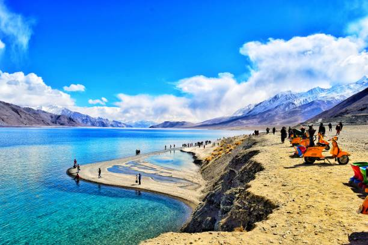

01
Leh
The cultural capital — framed by the 17th-century Leh Palace, Shanti Stupa, bustling Tibetan markets, and surrounding craggy peaks.

Discover the Land of High Passes — dramatic high-altitude desert plateaus, changing azure blue lakes, ancient cliffside Buddhist monasteries, and rugged Himalayan grandeur.
Explore Ladakh ↓Ladakh is a breathtaking high-altitude Himalayan Union Territory nestled between the Karakoram and Zanskar mountain ranges, renowned for its stark barren beauty and profound Tibetan Buddhist heritage.
From the crystal-clear changing colors of Pangong Tso and the sand dunes of Nubra Valley to the majestic cliffside architecture of Thiksey and Hemis monasteries, Ladakh offers an unmatched spiritual and adventurous expedition.
High-altitude lakes, desert valleys, and historic gompas across Ladakh.
The cultural capital — framed by the 17th-century Leh Palace, Shanti Stupa, bustling Tibetan markets, and surrounding craggy peaks.

A mesmerizing endorheic high-altitude lake at 14,270 feet, famous for its striking shifting shades of blue, green, and deep turquoise.

The Orchard of Ladakh — accessible via Khardung La pass, featuring cold desert sand dunes, double-humped Bactrian camels, and Diskit Monastery.

A stunning 12-story monastic complex resembling Tibet's Potala Palace, housing a towering 49-foot statue of Maitreya Buddha.
Ladakhi cuisine is warming, wholesome, and energy-dense, perfectly suited for surviving harsh sub-zero mountain winters with Tibetan-Central Asian influences.

A deeply spiritual society rooted in Vajrayana Buddhism, where prayer wheels, fluttering mantra flags, and chanting monks define daily life.
Enigmatic annual masked festivals (Hemis Tsechu, Losar) performed by lamas in colorful silk robes to ward off evil spirits.
Warm woolen Goncha robes fastened with colorful sashes, accompanied by deep resonant long horns (Dung-chen) and cymbals.
Sustainable pastoral communities practicing glacial-melt irrigation, handmade Pashmina goat wool spinning, and greenhouse farming.
Discover all states, union territories, local food specialties, and centuries of living traditions.
← Back to Union Territories